From RAW file to finished image.
Decoding, color, grading, library, and export in one open-source app, built natively for Windows and Mac.
Windows 10/11 x64 · Apple Silicon Mac · Free and open source (GPL-3.0)
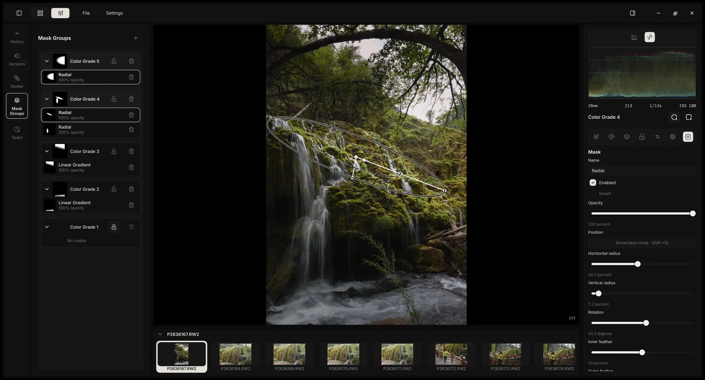
0.3.0
What's new in 0.3.0
Node-based grading and masks, a new render engine, and a library rebuilt for scale. Plus these refinements.
Full release notesSelective copy
Pick versions, nodes, or single parameters to paste onto other photos.
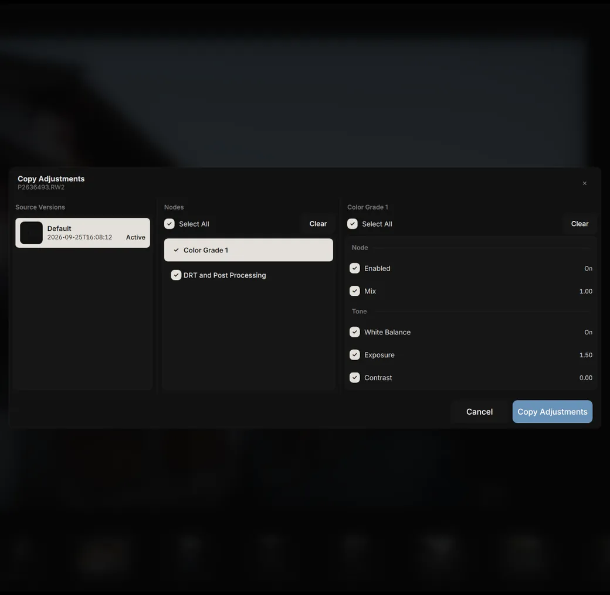
Custom shortcuts
Rebind any shortcut, with conflict checks and reset to defaults.
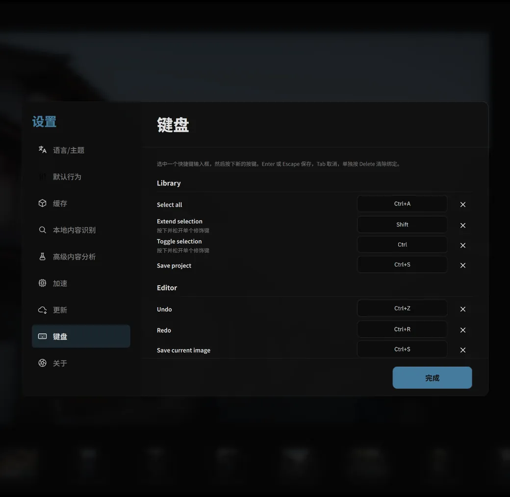
Searchable lenses
Type “70-200” to find a lens for correction.
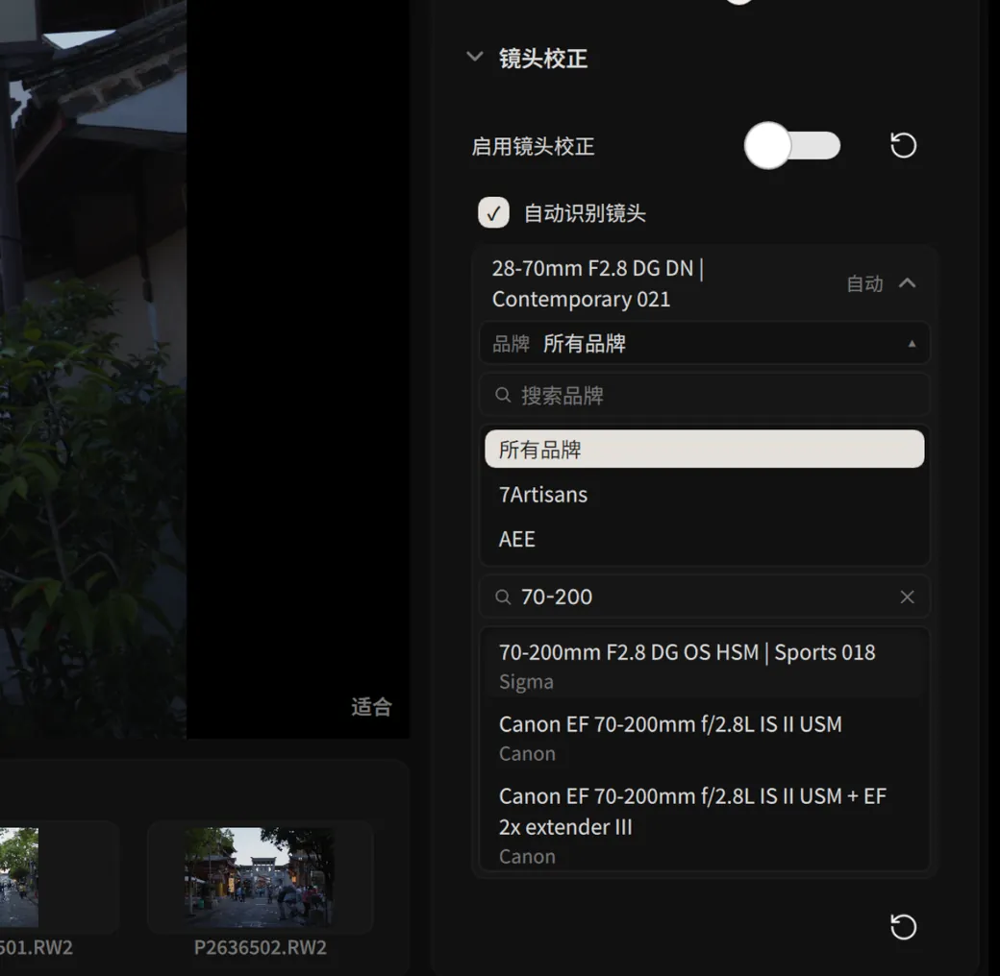
Natural contrast
An S-curve on perceptual lightness that keeps brightness and hue.
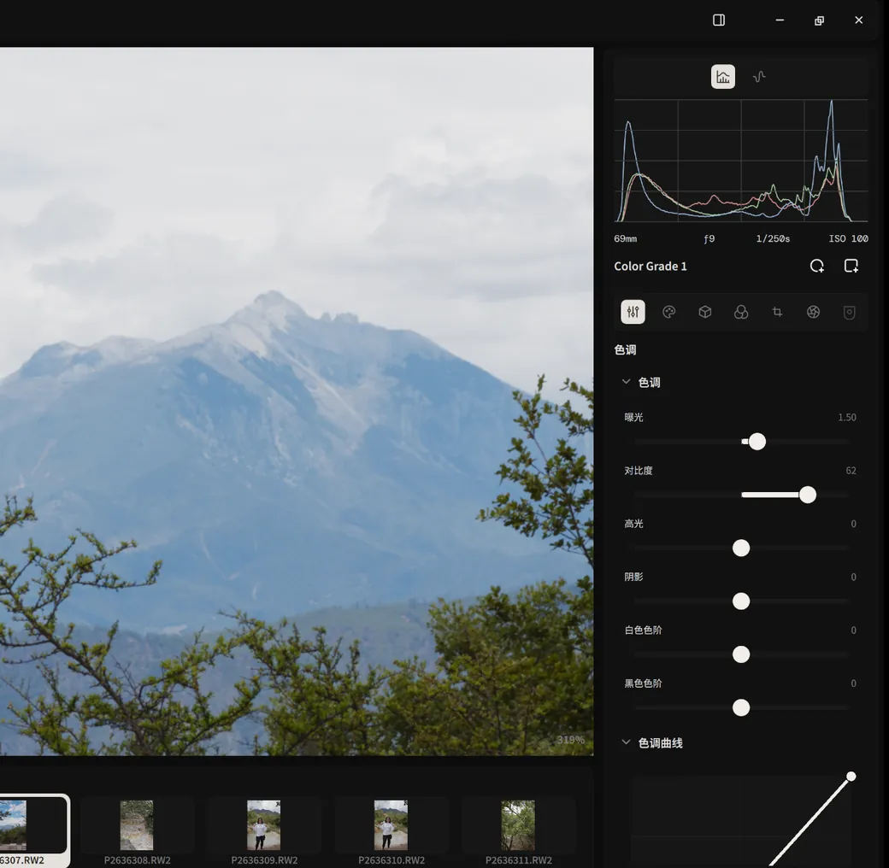
Nodes and masks
Every grade node is a complete set of tools. Local adjustments stay inside their masks.
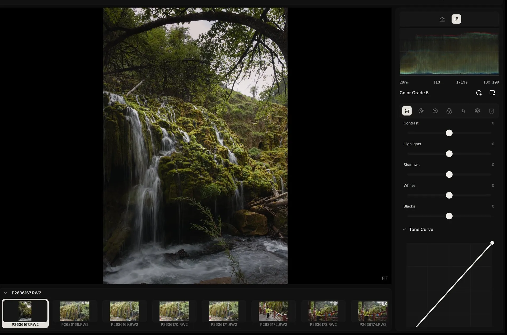
Technical specifications
- Node chain
- Develop → Color Grade nodes (any number) → display rendering transform
- Grading tools
- Local tone mapping · Lift / Gamma / Gain color wheels · tone curve · selective color
- Node editing
- Add, connect, rename, multi-select, batch delete; recorded in history and versions
- Lock protection
- Default grade layers are locked; any layer can be locked by hand
- Mask types
- Linear gradient · radial gradient
- Mask controls
- Position, radius, rotation, inner and outer feather, opacity, invert
- Masks per node
- Multiple, organized in the mask groups panel with thumbnails
Scene-referred color
32-bit floating point throughout, graded in ACEScc log space for an even response to exposure and tone.
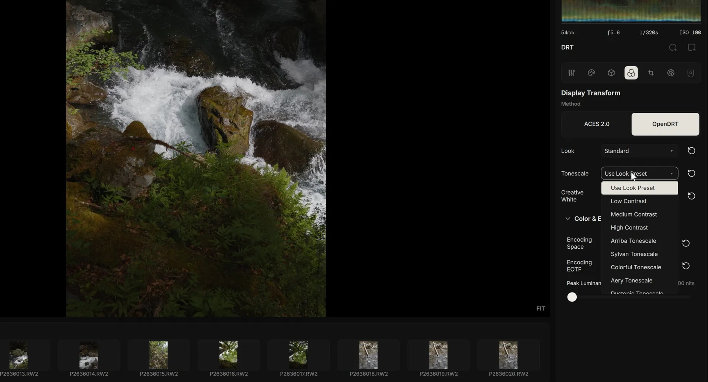
Technical specifications
- Precision
- 32-bit floating point throughout
- Camera color
- Camera color matrices; spectral data from rawtoaces-data for some models
- Grading space
- ACEScc (AP1 primaries)
- Display transform
- ACES 2.0 · OpenDRT
- Output targets
- Rec.709 · Display P3 · Rec.2020, with PQ and HLG
- HDR monitoring
- Extended dynamic range (EDR) on macOS
- Contrast 0.3.0
- S-curve on OkLab lightness; brightness and hue are preserved
Render engine
A render graph on the GPU. Change a parameter and only the nodes after it are recomputed.
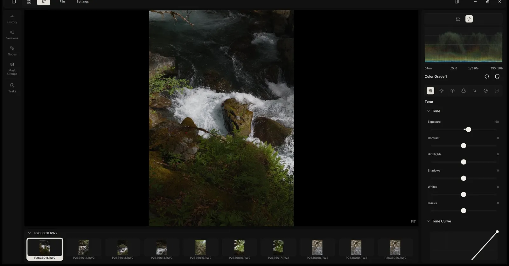
Technical specifications
- Windows
- CUDA (NVIDIA) · OpenCL (AMD / Intel)
- macOS
- Metal (Apple Silicon)
- Incremental rendering 0.3.0
- Results of unchanged nodes are cached by version and reused
- Working memory 0.3.0
- Two RGBA32F buffers used in turn; memory does not grow with the number of nodes
- Transient memory 0.3.0
- Demosaicing, highlight reconstruction, and local tone mapping share one pool, released when rendering finishes
- One pipeline
- Editor preview, thumbnails, analysis, and export
- Preview
- 2560 px long edge while dragging, 4096 px at rest; only the visible region when zoomed
- Scopes
- Histogram · RGB waveform
Library and search
Built on the DuckDB embedded database. All search runs on your own machine.
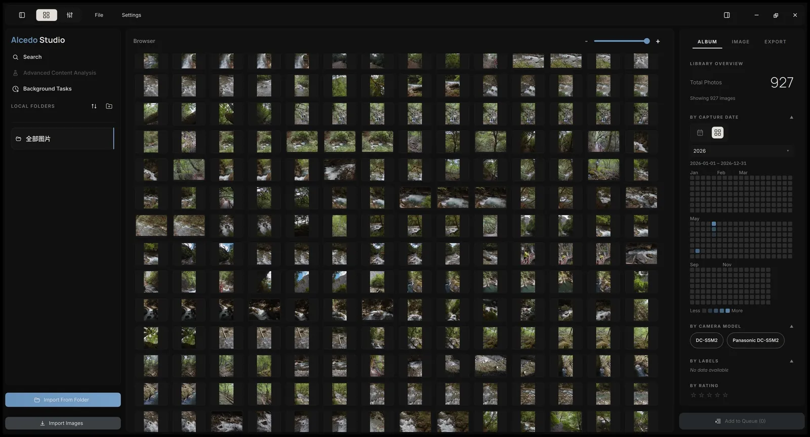
Technical specifications
- Project file
- One .alcd file: folders, metadata, semantic indexes, edit history
- Search speed 0.3.0
- 20,000 photos: live preview in about 12 ms, applied search in 13–21 ms, on a background thread
- Search terms 0.3.0
- “6.7” means June 7; “iso800” no longer matches ISO 8000; “dng” is a file type; terms combine with AND
- Shooting heatmap 0.3.0
- A year of shooting activity; click a day to filter
- Metadata filters
- Any combination of camera, lens, aperture, shutter, ISO, date, and rating
- Semantic search
- Local CLIP models and an HNSW vector index; offline after a one-time model download
- Import
- RAW files only; failed imports leave no partial records
Spectral film emulation
Film color from spectral measurements of real stocks, with grain and halation that match between preview and export.
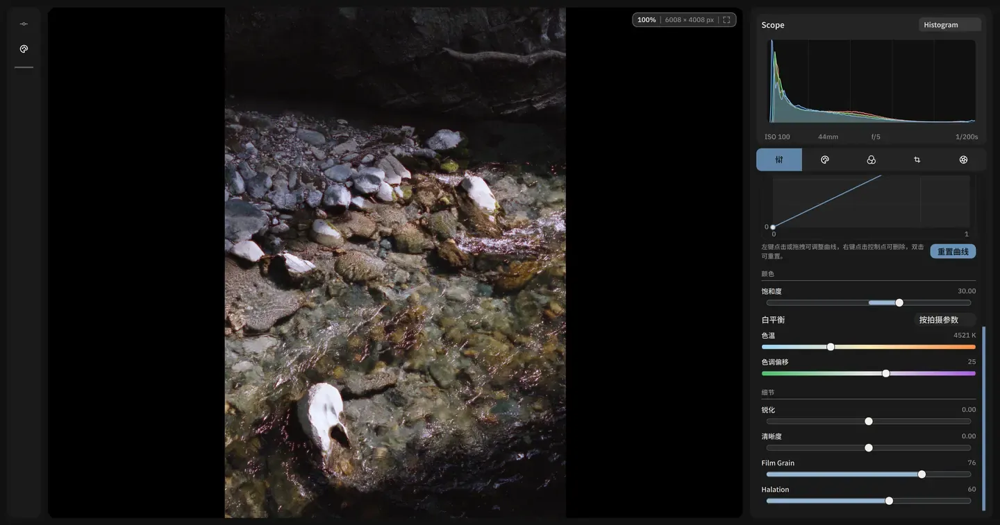
Technical specifications
- Film LUTs
- 68, from Jan Lohse's spectral_film_lut
- Grain
- After IPOL 2017, “Realistic Film Grain Rendering”; strength varies with image lightness
- Halation
- A faint red glow around high-contrast edges
Export
Up to 32-bit float, HDR with gain maps, and file names built from your metadata.
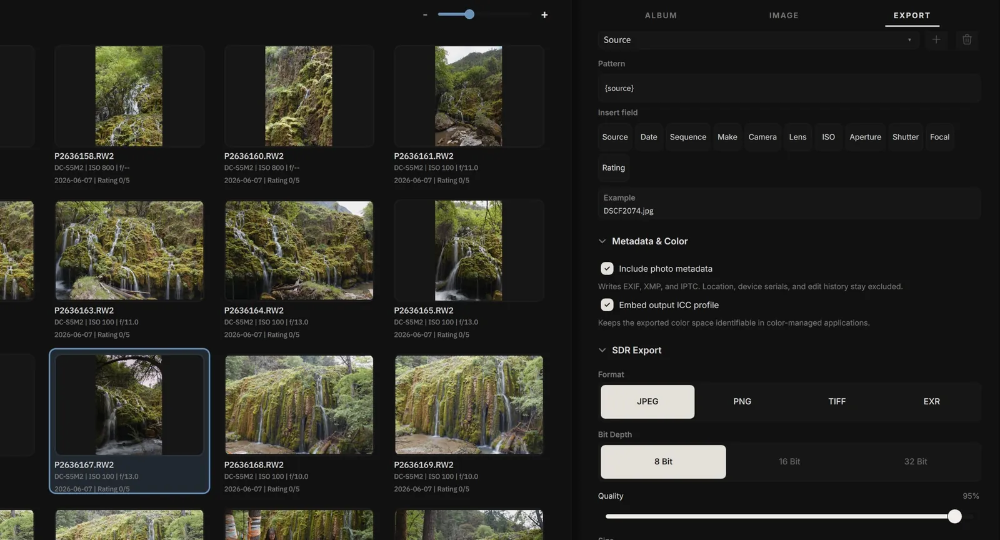
Technical specifications
- Formats
- JPEG 8-bit · PNG 8/16-bit · TIFF 8/16/32-bit · OpenEXR 16/32-bit float · Ultra HDR
- Size
- Original · long edge · bounding box · print size with DPI
- File name tokens
- Source name, date, camera, lens, aperture, shutter, ISO, rating, sequence
- Privacy
- GPS location, camera serial numbers, and edit history excluded by default
And the foundations.
RAW decoding
A customized LibRaw fork for current cameras.
Technical specifications
- Cameras
- Canon, Nikon, Sony, Fujifilm, Panasonic, OM System, Leica, Pentax, Sigma, and DNG from phones and drones
- Camera color 0.3.0
- Corrected levels, white balance, and color for the Sony A7C II, Canon EOS R6 Mark III, and others; DNG HueSatMap and LookTable in full
- Demosaicing
- RCD for Bayer; a GPU neural engine for X-Trans, also available for Bayer
- Highlights
- Inpaint Opposed, after darktable and RawTherapee
- Lens correction
- Lensfun: distortion, lateral chromatic aberration, vignetting
History and versions
Every adjustment is a commit; stepping back never overwrites history.
Technical specifications
- Named versions
- Several per photo, each an independent history branch
- Selective copy 0.3.0
- Versions, nodes, or individual parameters
- Shortcuts 0.3.0
- Customizable, with conflict checks
AI descriptions and ratings
Optional, with your own OpenAI- or Anthropic-compatible API key.
Technical specifications
- Output
- A description, a 1–5 star rating, and a short reason
- Rating standard
- Four strictness levels
- Keys
- Stored in Windows Credential Manager or the macOS Keychain
- Operation
- A background queue; the interface never blocks
Open-source credits
Released under GPL-3.0 and built on these projects.
Technical specifications
- RAW and metadata
- LibRaw · Lensfun · Exiv2
- Image and data
- OpenImageIO · OpenCV · DuckDB
- Interface
- Qt / QML · QuickQanava
- Color
- ACES 2.0 · OpenDRT (Jed Smith)
- Film
- spectral_film_lut (Jan Lohse) · IPOL 2017 film grain
- Demosaicing
- RCD (Luis Sanz Rodríguez) · DemosaicNet (Gharbi et al., 2016)
- Highlights
- darktable · RawTherapee
Get Alcedo Studio 0.3.0
Free and open source, for Windows and Apple Silicon Mac.
Windows 10/11 x64 · Apple Silicon Mac · Free and open source (GPL-3.0)
Upgrading from 0.2.9? Projects created with 0.2.9 or earlier can't be opened in 0.3.0.